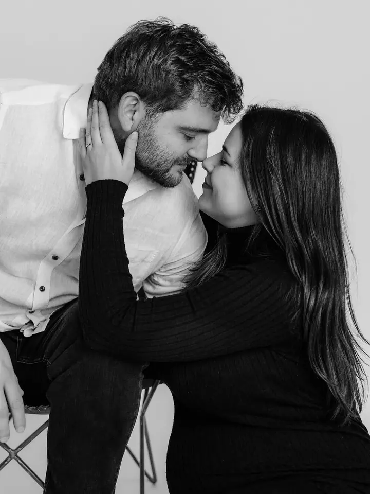

Rodinné focení
Fotíme venku při západu sluníčka nebo u mě v ateliéru. Nevadí, když děti běhají a dělají si svoje, právě tak vznikají ty nejkrásnější momentky.

Jmenuji se Michala Staňová a fotím rodiny, maminky, které čekají miminko, i úplně čerstvé novorozence. Mám ateliér v Újezdu u Brna, ale ráda za vámi přijedu kamkoliv po …
Rezervovat termínSama jsem máma, takže vím, že děti mají vlastní tempo a hlavně vlastní hlavu. Když miminko pláče nebo starší dítko radši běhá po louce, beru to jako součást našeho společného dobrodružství. Pro děti vymýšlím hry, aby jim focení pěkně odsejpalo, a často pak nechtějí přestat.


Nemám ráda strojené pózy a úsměvy na sílu. Chci vás vyfotit takové, jací opravdu jste. Jsem tu, abych vás nasměrovala, uklidnila a rozesmála, dokonce i tatínky. A máte nápad z Pinterestu? Sem s ním!
K fotkám z našeho newborn focení se sama často vracím a pokaždé mě dojmou. Proto chci, abyste i vy měli fotky, na které se budete rádi dívat. Není nic horšího než zaplatit za fotky, které pak strčíte do šuplíku.
Co fotím
Fotíme venku při západu sluníčka nebo u mě v ateliéru. Nevadí, když děti běhají a dělají si svoje, právě tak vznikají ty nejkrásnější momentky.
Pomůžu vám se stylingem, s lokací i s pózováním a mám pro vás šaty k zapůjčení. Klidně s sebou vezměte tatínka, sourozence nebo chlupáče.
Miminka fotím lifestyle, přirozeně a bez kostýmků. U vás doma nebo v ateliéru, s dostatkem času na kojení, mazlení i čistou plínku.
Od příprav nevěsty a ženicha přes párové fotky až po první tanec a prskavky. Snažím se být všude a při všem, svatby fotím po celé ČR.
Postup
Ve formuláři vyberte, o jaké focení máte zájem, a napište mi pár slov o vás. Ozvu se a domluvíme termín.
Pomůžu s výběrem lokace, poradím, co na sebe, a na těhotenské focení vám můžu zapůjčit šaty.
Řeknu vám, jak si stoupnout a co dělat. Na děti a miminka mám vždy dost času, přestávky na kojení nebo mazlení jsou samozřejmost.
Z focení vyberu ty nejlepší snímky, upravím je a pošlu vám je na památku.
Otázky
Nevadí, když děti běhají, blbnou nebo nemají náladu stát na místě. Právě při tom vznikají ty nejhezčí momentky a já pro ně mám připravené hry.
U mě v ateliéru v Újezdu u Brna, venku kdekoliv po Brně a okolí, newborn klidně i u vás doma. Svatby fotím po celé ČR.
Ne, newborn fotím lifestyle. Nefotím zamotané larvičky, miminka na houpačkách ani v kostýmcích, dávám přednost přirozenosti.
Ano, sezónně. Třeba vánoční focení v nazdobeném ateliéru (15 až 20 minut, 5 fotografií za 1800 Kč) nebo focení Máma & já ke Dni matek (30 až 40 minut, 6 fotografií za 1800 Kč).